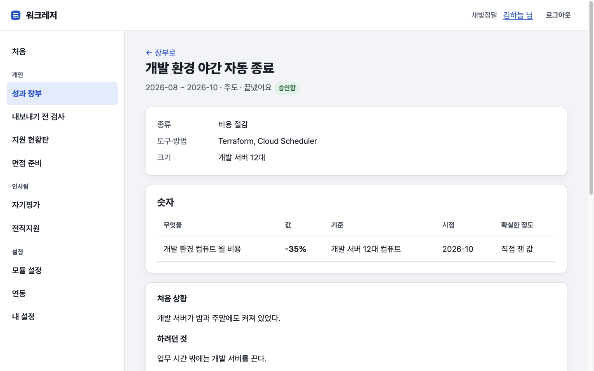
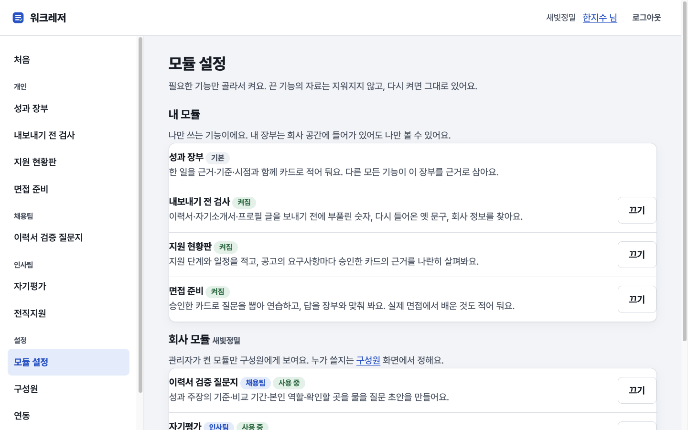
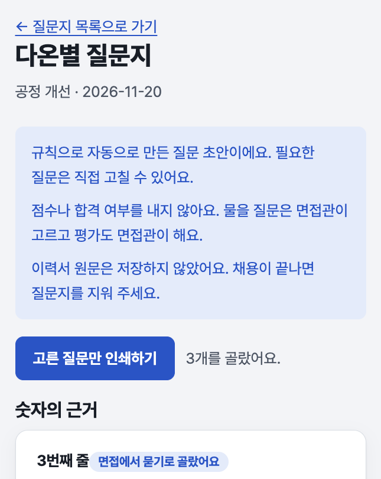
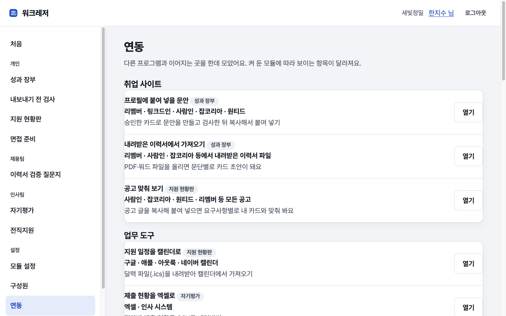

기준이 빠진 숫자
숫자만 남으면
다른 뜻이 돼요
기록에는 ‘서버 대당 단가 −40%’와 ‘전체 월 비용 −30%’가 따로 있어요. 그런데 이력서에는 ‘비용 40% 절감’이라고 쓰고, 면접에서는 ‘30%’라고 말해요.
근거가 남는 성과 장부 · 워크레저
내가 한 일을 근거·기준·시점과 함께 적어 둬요. 이력서·자기평가서·프로필을 내보내기 전에 부풀린 숫자, 다시 들어온 옛 문구, 회사 정보를 찾아 줘요.
글을 대신 지어내지 않고, 내 기록과 맞춰 봐요.

기억만으로는 이어지지 않으니까
같은 일을 적은 글인데, 문서마다 말이 달라질 때가 있어요.
아래는 설명을 위해 지어낸 예시예요.
기준이 빠진 숫자
기록에는 ‘서버 대당 단가 −40%’와 ‘전체 월 비용 −30%’가 따로 있어요. 그런데 이력서에는 ‘비용 40% 절감’이라고 쓰고, 면접에서는 ‘30%’라고 말해요.
다시 들어온 옛 문구
면접에서 오해가 드러나 이력서를 고쳤어요. 하지만 다른 문서에 남아 있던 옛 문구가 다음 이력서에 다시 들어가요.
흩어진 근거
근거가 문서·메신저·기억에 나뉘어 있어요. 퇴사한 뒤에는 회사 문서를 열 수 없어, 무엇을 기준으로 적었는지 되짚기 어려워요.
기록에서 내보내기까지
한 번 적고 끝내는 문서가 아니라, 다음 글의 근거가 되는 장부예요.
숫자마다 기준과 시점을 붙여 카드로 적어요. 직접 확인한 카드만 승인해요.
보내려는 글을 넣으면 장부에 없는 숫자, 기준이 빠진 숫자, 전에 고친 문구, 회사 안 정보를 줄 단위로 알려 줘요.
문구를 고치면 그 문구가 남아 있는 카드와 이미 내보낸 글을 알려 줘요. 어디를 다시 살펴야 할지 알 수 있어요.

하나의 장부, 필요한 쓰임만
성과 장부는 기본으로 써요. 나머지 개인 모듈은 각자 켜고 꺼요.
회사 모듈은 관리자가 켠 뒤 쓸 사람을 정해요.

한 일을 근거·기준·시점과 함께 카드로 적어 둬요. 다른 모든 기능이 이 장부를 근거로 삼아요.
이력서·자기소개서·프로필 글을 보내기 전에 부풀린 숫자, 다시 들어온 옛 문구, 회사 정보를 찾아요.
지원 단계와 일정을 적어요. 공고의 요구사항마다 승인한 카드의 근거를 나란히 살펴봐요.
승인한 카드로 질문을 뽑아 연습하고, 답을 장부와 맞춰 봐요. 실제 면접에서 배운 것도 적어 둬요.
성과 주장의 기준·비교 기간·본인 역할·확인할 곳을 물을 질문 초안을 만들어요. 지원자를 점수로 평가하지 않아요.
승인한 카드로 자기평가를 쓰고 검사한 뒤 제출해요. 인사 담당은 제출한 글과 제출 현황만 봐요.
다음 일자리를 한 단계씩 준비해요. 회사가 제공한 지원도 기록해요.



지금 맡은 일에 맞게
해 온 일을 카드로 모으고, 공고와 맞춰 봐요. 이력서와 프로필 문안을 검사하고 면접 답변을 준비해요.
평소에 적어 둔 카드에서 평가 기간에 한 일을 골라요. 자기평가 글을 내 말로 다듬고 검사한 뒤 제출해요.
성과 주장에 어떤 기준과 역할이 빠졌는지 살펴봐요. 확인할 질문 초안을 고쳐 면접에 가져가요.
다음 일자리 준비 단계를 함께 확인해요. 회사가 제공한 상담·교육 등의 지원을 기록해요.
기능보다 먼저 정한 원칙
장부의 주인은 본인이에요.
검사는 판단을 대신하지 않아요.
회사 화면에는 본인이 제출한 글만 보여요. 개인 장부는 열 수 없어요.
사람을 비교하는 대신 사실과 확인할 질문을 보여 줘요.
검사와 질문은 정해진 규칙으로 만들어요. 자동으로 만든 것은 사람이 고치는 초안이에요.
처리한 원문은 버리고, 필요한 짧은 구절과 확인할 질문 초안만 남겨요.
검사를 통과했다고 회사가 내보내기를 허락한 것은 아니에요. 회사 규정은 따로 확인해요.
되는 것과 아직 안 되는 것을 나눠서
파일로 주고받는 것과 직접 연결되는 것은 달라요.
어떤 방식으로 이어지는지 먼저 알려 드려요.
PDF·워드(.docx) 파일을 올려 카드 초안으로 가져오거나, 보내기 전에 검사해요.
리멤버·링크드인·사람인·잡코리아·원티드에 쓸 문안을 승인한 카드로 만들어요. 검사한 뒤 직접 붙여 넣어요.
요구사항마다 내 카드의 근거를 나란히 살펴봐요. 공고를 자동으로 가져오는 방식은 아니에요.
달력 파일(.ics)을 내려받아 쓰는 캘린더에서 가져와요.
지원 현황, 자기평가 제출 현황, 전직지원 제공 기록을 CSV 파일로 내려받아요.
CSV 파일로 명단을 올려 회사 공간에 구성원을 넣어요.
웹훅 주소를 직접 연결해 누가 무엇을 했는지와 화면 주소만 보내요. 장부나 제출한 글은 싣지 않아요.
연결 주소와 열쇠로 읽어 가요. 승인 전 카드와 근거 위치는 나가지 않아요.
파일을 카드 초안으로 가져오거나, 승인한 카드를 파일로 내려받아요.
2026년 11월 20일에 각 회사가 공개한 문서와 약관을 읽고 적었어요.
| 어디 | 왜 아직인가 | 지금은 |
|---|---|---|
| 리멤버 프로필에 자동으로 반영 | 리멤버는 개인 프로필을 읽고 쓰는 공개 연결 주소를 내놓지 않았고, 약관이 자동 입력을 막아요. | 지금은 리멤버에서 내려받은 이력서 파일을 올리고, 붙여 넣을 문안을 받아 가는 방식으로 이어져요. |
| 사람인·잡코리아·원티드 공고 자동 가져오기 | 각 회사에 이용 신청을 하고 승인을 받아야 해요. | 지금은 공고 글을 붙여 넣으면 돼요. |
| 링크드인 프로필에 자동으로 반영 | 경력을 고치는 권한은 승인받은 채용 솔루션 회사에만 열려 있어요. | 지금은 붙여 넣을 문안을 받아 가는 방식으로 이어져요. |
| Jira·Confluence에서 한 일 가져오기 | 판매하는 제품은 Atlassian에 연결 앱을 등록해야 해요. | 등록을 마치면 붙일 수 있어요. |
| Notion으로 보내기 | 연결 방식이 공개돼 있어요. | 다음 순서로 붙일 수 있어요. |
| 그리팅·나인하이어 지원자 가져오기 | 고객사가 유료 요금제에서 발급한 연결 열쇠가 있어야 해요. | 지금은 지원자가 낸 이력서 파일을 올리면 돼요. |
| flex·시프티 구성원 명단 | 고객사 계약과 연결 신청이 필요해요. | 지금은 명단을 CSV로 내려받아 올리면 돼요. |
| 더존(WEHAGO·Amaranth 10·옴니이솔) | 공개된 연결 규격을 찾지 못했어요. 고객사마다 협의가 필요해요. | 지금은 명단을 CSV로 내려받아 올리면 돼요. |

화면으로 살펴봐요
카드에 적고, 글을 검사하고, 고친 내용을 다시 확인하는 흐름을 봐요.
화면 속 회사와 사람은 모두 지어낸 것이에요.
유튜브에서 보기시작하기 전에
지금은 설치한 컴퓨터 안에 저장돼요. 검사할 글을 인터넷이나 AI 모델로 보내지 않아요. 직접 연결한 웹훅 알림은 한 줄 소식을 보내고, 읽기용 열쇠를 준 프로그램은 승인한 카드를 읽어 갈 수 있어요.
근거는 문서 제목과 날짜 같은 위치만 적어요. 회사 자료의 내용을 옮기지 않아요. 무엇을 가지고 나와도 되는지는 회사 규정을 확인해요.
못 봐요. 장부는 본인만 봐요. 인사 담당자는 회사 화면에서 본인이 제출한 글과 제출 현황만 볼 수 있어요.
아니요. 점수나 순위를 만들지 않아요. 면접관이 물을 질문의 초안만 만들어요. 사람이 질문을 고르고 고칠 수 있어요.
아니요. 개인 프로필을 고치는 공개 연결 주소가 없고, 약관이 자동 입력을 막아요. 지금은 내려받은 이력서 파일을 가져오거나, 승인한 카드로 만든 문안을 검사한 뒤 직접 붙여 넣어요.
가격은 아직 정하지 않았어요. 먼저 써 볼 팀과 사람을 모으고 있어요.
내 기록부터, 팀의 다음 일까지
한 일을 근거와 함께 남기고 싶다면,
보내는 글을 한 번 더 확인하고 싶다면 함께 써 봐요.